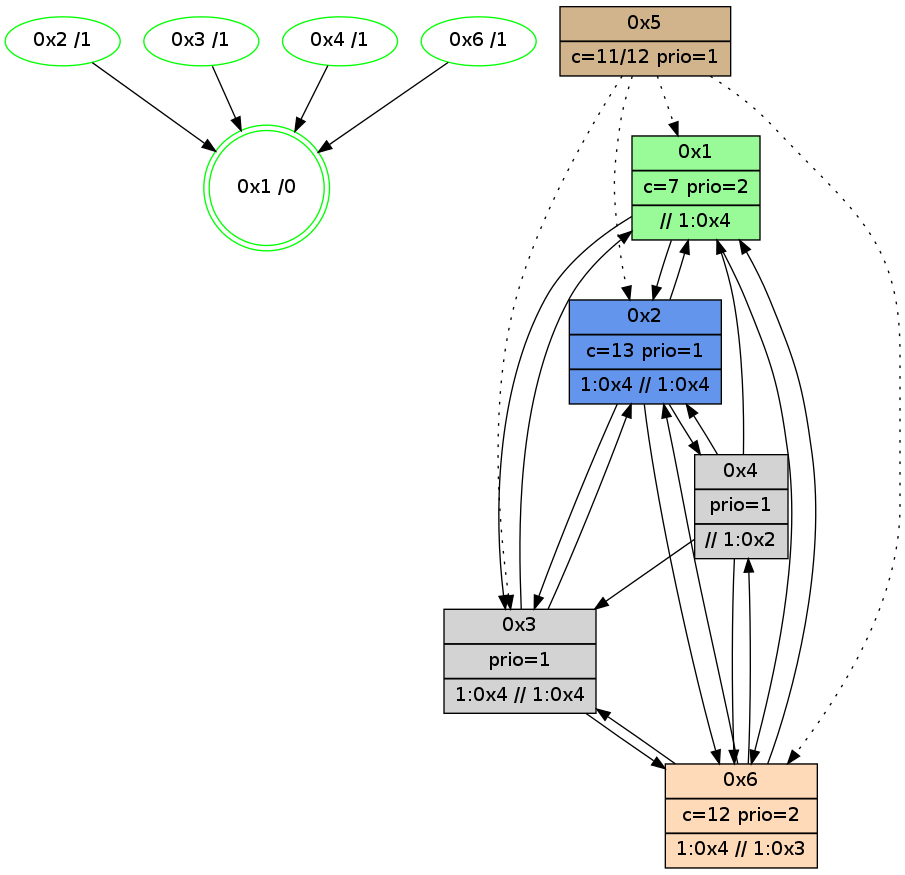

>> << IDX [start] -100 -25 -5 +0 +5 +25 +100 [960.252701044]
 Previous packets
----------------------------------------------------------------------
955.331624 beacon01(adaf) #0 coord=01,02,05,03,04,06 cycle=432.0ms assoc
-- color-indic=1 64 43 03
955.341586 beacon02(adaf) #0 coord=01,02,05,03,04,06 cycle=432.0ms assoc 64 12 fc
955.351586 beacon05(adaf) #0 coord=01,02,05,03,04,06 cycle=432.0ms assoc 64 b4 d6
955.361585 beacon03(adaf) #0 coord=01,02,05,03,04,06 cycle=432.0ms assoc 64 28 f2
955.371585 beacon04(adaf) #0 coord=01,02,05,03,04,06 cycle=432.0ms assoc 64 8e d8
955.381585 beacon06(adaf) #0 coord=01,02,05,03,04,06 cycle=432.0ms assoc 64 fa c4
955.393345 [Hello(4): seq=761 sym=2,1,6,3 sysInfo=hasWarning stat=2:9,1,4,0/1:4,5,11,0/6:7,13,3,0/3:1,4,1,0]
955.395554 [Color(1) seq=187 @0:0 color=7 prio=2 >>1.@2,1.@3,1.@4 c=1,4,6,8,9,b,c;0,2,3,5,a]
955.397868 [Color(2) seq=148 @0:0 prio=1 >2.@6,1.@3,1.@4 >>2.@6,1.@2,1.@3 c=7;1,4,6,8,9,b]
955.401260 [Hello(6): seq=674 sym=4,2,1,3 sysInfo=hasWarning stat=4:2,7,1,0/2:2,15,11,1/1:6,10,10,1/3:6,15,2,4]
955.404419 [Color(6) seq=146 @0:0 color=12 prio=2 >1.@2,1.@3,1.@4 >>1.@2,1.@3,1.@4 c=7;1,4,6,8,9,b]
----------------------------------------------------------------------
955.823731 beacon01(adaf) #0 coord=01,02,05,03,04,06 cycle=432.0ms assoc
-- color-indic=1 64 0f b3
955.833692 beacon02(adaf) #0 coord=01,02,05,03,04,06 cycle=432.0ms assoc 64 5e 4c
955.843693 beacon05(adaf) #0 coord=01,02,05,03,04,06 cycle=432.0ms assoc 64 f8 66
955.853694 beacon03(adaf) #0 coord=01,02,05,03,04,06 cycle=432.0ms assoc 64 64 42
955.863692 beacon04(adaf) #0 coord=01,02,05,03,04,06 cycle=432.0ms assoc 64 c2 68
955.873694 beacon06(adaf) #0 coord=01,02,05,03,04,06 cycle=432.0ms assoc 64 b6 74
955.884904 [Hello(1): seq=661 sym=2,4,6,3 sysInfo=hasWarning,coloring-mode-on,ColoringModeRequestCalled stat=2:4,11,15,2/4:0,2,1,0/6:3,6,2,0/3:4,3,4,1]
955.887569 [Color(4) seq=116 @0:0 prio=1 >1.@3 >>1.@2,1.@3,1.@4 c=7,c;1,4,6,8,9,b]
955.890819 [Hello(2): seq=1250 sym=3,6,1 sysInfo=hasWarning stat=3:10,8,4,1/6:12,15,3,0/1:7,11,4,0]
----------------------------------------------------------------------
956.315839 beacon01(adaf) #0 coord=01,02,05,03,04,06 cycle=432.0ms assoc
-- color-indic=1 64 cb dc
956.325800 beacon02(adaf) #0 coord=01,02,05,03,04,06 cycle=432.0ms assoc 64 9a 23
956.335801 beacon05(adaf) #0 coord=01,02,05,03,04,06 cycle=432.0ms assoc 64 3c 09
956.345800 beacon03(adaf) #0 coord=01,02,05,03,04,06 cycle=432.0ms assoc 64 a0 2d
956.355801 beacon04(adaf) #0 coord=01,02,05,03,04,06 cycle=432.0ms assoc 64 06 07
956.365801 beacon06(adaf) #0 coord=01,02,05,03,04,06 cycle=432.0ms assoc 64 72 1b
956.377540 [Hello(4): seq=762 sym=2,1,6,3 sysInfo=hasWarning stat=2:10,2,4,0/1:5,6,11,0/6:8,14,3,0/3:1,4,1,0]
956.380052 [Color(2) seq=149 @0:0 color=13 prio=1 >1.@3,1.@4 >>1.@2,1.@3,1.@4 c=7,c;1,4,6,8,9,b]
956.383180 [Color(6) seq=147 @0:0 color=12 prio=2 >1.@2,1.@3,1.@4 >>1.@2,1.@3,1.@4 c=7;1,4,6,8,9,b]
956.387827 [STC(1) #0.129 new-neigh,tree-change,inconsistent-stability,stable,to-color d=0]
956.390750 [Color(1) seq=188 @0:0 color=7 prio=2 >>1.@3,1.@4 c=1,4,6,8,9,b,c;0,2,3,5,a]
----------------------------------------------------------------------
956.807946 beacon01(adaf) #0 coord=01,02,05,03,04,06 cycle=432.0ms assoc
-- color-indic=1 64 86 db
956.817908 beacon02(adaf) #0 coord=01,02,05,03,04,06 cycle=432.0ms assoc 64 d7 24
956.827907 beacon05(adaf) #0 coord=01,02,05,03,04,06 cycle=432.0ms assoc 64 71 0e
956.837908 beacon03(adaf) #0 coord=01,02,05,03,04,06 cycle=432.0ms assoc 64 ed 2a
956.847908 beacon04(adaf) #0 coord=01,02,05,03,04,06 cycle=432.0ms assoc 64 4b 00
956.857908 beacon06(adaf) #0 coord=01,02,05,03,04,06 cycle=432.0ms assoc 64 3f 1c
956.869427 [Hello(1): seq=662 sym=2,4,6,3 sysInfo=hasWarning,coloring-mode-on,ColoringModeRequestCalled stat=2:5,11,15,2/4:0,2,1,0/6:3,6,2,0/3:4,4,4,1]
956.872095 [STC(4)->1 #0.129 new-neigh,tree-change,inconsistent-stability,stable,to-color d=1]
956.873436 [STC(6)->1 #0.129 new-neigh,tree-change,inconsistent-stability,stable,to-color d=1]
956.874708 [Color(4) seq=117 @0:0 prio=1 >1.@3 >>1.@2,1.@3,1.@4 c=7,c;1,4,6,8,9,b]
956.876657 [TreeStatus(6)-.->1 #0.129 new-neigh,tree-change,inconsistent-stability,stable child=1]
956.878925 [Hello(2): seq=1251 sym=3,6,1 sysInfo=hasWarning stat=3:11,8,4,1/6:12,0,3,0/1:7,12,5,0]
956.881630 [STC(2)->1 #0.129 new-neigh,tree-change,inconsistent-stability,stable,to-color d=1]
----------------------------------------------------------------------
957.300054 beacon01(adaf) #0 coord=01,02,05,03,04,06 cycle=432.0ms assoc
-- color-indic=1 64 42 b4
957.310015 beacon02(adaf) #0 coord=01,02,05,03,04,06 cycle=432.0ms assoc 64 13 4b
957.320015 beacon05(adaf) #0 coord=01,02,05,03,04,06 cycle=432.0ms assoc 64 b5 61
957.330015 beacon03(adaf) #0 coord=01,02,05,03,04,06 cycle=432.0ms assoc 64 29 45
957.340018 beacon04(adaf) #0 coord=01,02,05,03,04,06 cycle=432.0ms assoc 64 8f 6f
957.350016 beacon06(adaf) #0 coord=01,02,05,03,04,06 cycle=432.0ms assoc 64 fb 73
957.361775 [Hello(4): seq=763 sym=2,1,6,3 sysInfo=hasWarning stat=2:11,3,5,0/1:6,7,12,0/6:8,15,3,1/3:1,4,1,0]
957.364274 [Hello(6): seq=676 sym=4,2,1,3 sysInfo=hasWarning stat=4:2,7,1,0/2:4,15,12,1/1:7,11,11,1/3:8,0,2,4]
957.366212 [Color(2) seq=150 @0:0 color=13 prio=1 >1.@3,1.@4 >>1.@2,1.@3,1.@4 c=7,c;1,4,6,8,9,b]
957.369133 [Color(6) seq=148 @0:0 color=12 prio=2 >1.@3,1.@4 >>1.@3,1.@4 c=7;1,4,6,8,9,b]
----------------------------------------------------------------------
957.792161 beacon01(adaf) #0 coord=01,02,05,03,04,06 cycle=432.0ms assoc
-- color-indic=1 64 0e 04
957.802123 beacon02(adaf) #0 coord=01,02,05,03,04,06 cycle=432.0ms assoc 64 5f fb
957.812123 beacon05(adaf) #0 coord=01,02,05,03,04,06 cycle=432.0ms assoc 64 f9 d1
957.822123 beacon03(adaf) #0 coord=01,02,05,03,04,06 cycle=432.0ms assoc 64 65 f5
957.832123 beacon04(adaf) #0 coord=01,02,05,03,04,06 cycle=432.0ms assoc 64 c3 df
957.842123 beacon06(adaf) #0 coord=01,02,05,03,04,06 cycle=432.0ms assoc 64 b7 c3
957.852980 [Hello(1): seq=663 sym=2,4,6,3 sysInfo=hasWarning,coloring-mode-on,ColoringModeRequestCalled stat=2:6,12,0,2/4:0,3,1,0/6:4,7,3,1/3:4,4,5,1]
957.855652 [Color(4) seq=118 @0:0 prio=1 >1.@3 >>1.@2,1.@3,1.@4 c=7,c;1,4,6,8,9,b]
957.857526 [Hello(2): seq=1252 sym=3,6,1 sysInfo=hasWarning stat=3:11,8,4,1/6:12,1,3,0/1:7,12,5,0]
----------------------------------------------------------------------
958.284269 beacon01(adaf) #0 coord=01,02,05,03,04,06 cycle=432.0ms assoc
-- color-indic=1 64 ca 6b
958.294230 beacon02(adaf) #0 coord=01,02,05,03,04,06 cycle=432.0ms assoc 64 9b 94
958.304229 beacon05(adaf) #0 coord=01,02,05,03,04,06 cycle=432.0ms assoc 64 3d be
958.314230 beacon03(adaf) #0 coord=01,02,05,03,04,06 cycle=432.0ms assoc 64 a1 9a
958.324230 beacon04(adaf) #0 coord=01,02,05,03,04,06 cycle=432.0ms assoc 64 07 b0
958.334231 beacon06(adaf) #0 coord=01,02,05,03,04,06 cycle=432.0ms assoc 64 73 ac
958.345969 [Hello(4): seq=764 sym=2,1,6,3 sysInfo=hasWarning stat=2:12,4,5,0/1:7,7,12,0/6:9,0,3,1/3:1,4,1,0]
958.348471 [Hello(6): seq=677 sym=4,2,1,3 sysInfo=hasWarning stat=4:2,7,1,0/2:5,15,12,1/1:8,11,11,1/3:9,1,2,4]
958.350491 [Color(2) seq=151 @0:0 color=13 prio=1 >1.@3,1.@4 >>1.@2,1.@3,1.@4 c=7,c;1,4,6,8,9,b]
958.352806 [Color(1) seq=190 @0:0 color=7 prio=2 >>1.@4 c=1,4,6,8,9,b,c,d;0,2,3,5,a]
958.356983 [Color(6) seq=149 @0:0 color=12 prio=2 >1.@3,1.@4 >>1.@3,1.@4 c=7;1,4,6,8,9,b,d]
----------------------------------------------------------------------
958.776376 beacon01(adaf) #0 coord=01,02,05,03,04,06 cycle=432.0ms assoc
-- color-indic=1 64 94 0a
958.786338 beacon02(adaf) #0 coord=01,02,05,03,04,06 cycle=432.0ms assoc 64 c5 f5
958.796338 beacon05(adaf) #0 coord=01,02,05,03,04,06 cycle=432.0ms assoc 64 63 df
958.806339 beacon03(adaf) #0 coord=01,02,05,03,04,06 cycle=432.0ms assoc 64 ff fb
958.816337 beacon04(adaf) #0 coord=01,02,05,03,04,06 cycle=432.0ms assoc 64 59 d1
958.826338 beacon06(adaf) #0 coord=01,02,05,03,04,06 cycle=432.0ms assoc 64 2d cd
958.838083 [Hello(2): seq=1253 sym=3,6,1 sysInfo=hasWarning stat=3:11,8,4,1/6:12,2,3,0/1:7,13,5,0]
958.840821 [Hello(1): seq=664 sym=2,4,6,3 sysInfo=hasWarning,coloring-mode-on,ColoringModeRequestCalled stat=2:7,12,0,2/4:0,3,1,0/6:4,8,3,1/3:4,5,5,1]
958.842606 [Color(3) seq=121 @0:0 prio=1 >1.@4 >>1.@3,1.@4 c=7,c,d;1,4,6,8,9,b]
958.844824 [STC(1) #0.130 new-neigh,tree-change,inconsistent-stability,stable,to-color d=0]
958.847766 [Color(4) seq=119 @0:0 prio=1 >>1.@2,1.@4 c=7,c;1,4,6,8,9,b,d]
----------------------------------------------------------------------
959.268484 beacon01(adaf) #0 coord=01,02,05,03,04,06 cycle=432.0ms assoc
-- color-indic=1 64 50 65
959.278445 beacon02(adaf) #0 coord=01,02,05,03,04,06 cycle=432.0ms assoc 64 01 9a
959.288446 beacon05(adaf) #0 coord=01,02,05,03,04,06 cycle=432.0ms assoc 64 a7 b0
959.298445 beacon03(adaf) #0 coord=01,02,05,03,04,06 cycle=432.0ms assoc 64 3b 94
959.308445 beacon04(adaf) #0 coord=01,02,05,03,04,06 cycle=432.0ms assoc 64 9d be
959.318448 beacon06(adaf) #0 coord=01,02,05,03,04,06 cycle=432.0ms assoc 64 e9 a2
959.330201 [Hello(4): seq=765 sym=2,1,6,3 sysInfo=hasWarning stat=2:12,5,5,0/1:7,8,12,0/6:10,1,3,1/3:1,4,1,0]
959.332870 [STC(2)->1 #0.130 new-neigh,tree-change,inconsistent-stability,stable,to-color d=1]
959.335490 [Color(2) seq=152 @0:0 color=13 prio=1 >1.@4 >>1.@4 c=7,c;1,4,6,8,9,b]
959.337745 [STC(6)->1 #0.130 new-neigh,tree-change,inconsistent-stability,stable,to-color d=1]
959.339473 [Hello(3): seq=763 sym=6,1,2 sysInfo=hasWarning stat=6:8,13,4,3/1:1,14,7,1/2:8,1,6,0]
959.341132 [Color(6) seq=150 @0:0 color=12 prio=2 >1.@4 >>1.@3,1.@4 c=7;1,4,6,8,9,b,d]
959.343641 [STC(3)->1 #0.130 new-neigh,tree-change,inconsistent-stability,stable,to-color d=1]
959.346612 [Color(1) seq=191 @0:0 color=7 prio=2 >>1.@4 c=1,4,6,8,9,b,c,d;0,2,3,5,a]
----------------------------------------------------------------------
959.760594 beacon01(adaf) #0 coord=01,02,05,03,04,06 cycle=432.0ms assoc
-- color-indic=1 64 1c d5
959.770554 beacon02(adaf) #0 coord=01,02,05,03,04,06 cycle=432.0ms assoc 64 4d 2a
959.780556 beacon05(adaf) #0 coord=01,02,05,03,04,06 cycle=432.0ms assoc 64 eb 00
959.790555 beacon03(adaf) #0 coord=01,02,05,03,04,06 cycle=432.0ms assoc 64 77 24
959.800556 beacon04(adaf) #0 coord=01,02,05,03,04,06 cycle=432.0ms assoc 64 d1 0e
959.810556 beacon06(adaf) #0 coord=01,02,05,03,04,06 cycle=432.0ms assoc 64 a5 12
959.822309 [Hello(2): seq=1254 sym=3,6,1,4 sysInfo=hasWarning stat=3:12,9,5,1/6:12,3,4,0/1:8,14,6,0/4:0,0,0,0]
959.824472 [Hello(1): seq=665 sym=2,6,3 sysInfo=hasWarning,coloring-mode-on,ColoringModeRequestCalled stat=2:7,12,0,2/6:4,8,3,1/3:4,6,5,1]
959.826597 [Color(4) seq=120 @0:0 prio=1 >>1.@2,1.@4 c=7,c;1,4,6,8,9,b,d]
959.828574 [Color(3) seq=122 @0:0 prio=1 >1.@4 >>1.@4 c=7,c,d;1,4,6,8,9,b]